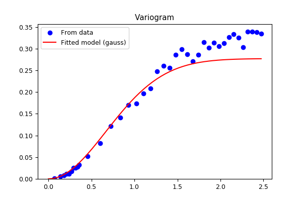

3.5.6.32. test_regrid_kriging_variogram.py – Test functions variogram()¶

"""Test functions :func:`~vacumm.misc.grid.kriging.variogram`"""
nx = ny = 50
np = 500
mtype = 'gauss'
distmax = 2.5
from vcmq import N, P, code_file_name, savefigs
from vacumm.misc.grid.kriging import gridded_gauss3, random_gauss3, variogram, variogram_fit
# Generate random field
xxg, yyg, zzg = gridded_gauss3(nx=nx, ny=ny)
x, y, z = random_gauss3(np=np)
# Variogram from data
d, v = variogram(x, y, z, distmax=distmax)
# Variogram fit with null nugget
vm = variogram_fit(x, y, z, mtype, n=0, distmax=distmax)
D = N.linspace(0, d.max())
V = vm(D)
# Compare
P.figure(figsize=(6, 4))
P.title('Variogram')
P.plot(d, v, 'ob', label='From data')
P.plot(D, V, '-r', label='Fitted model (%s)'%mtype)
P.legend(loc='best')
P.ylim(ymin=0)
savefigs(code_file_name(ext=False), pdf=True, verbose=False)
P.close()